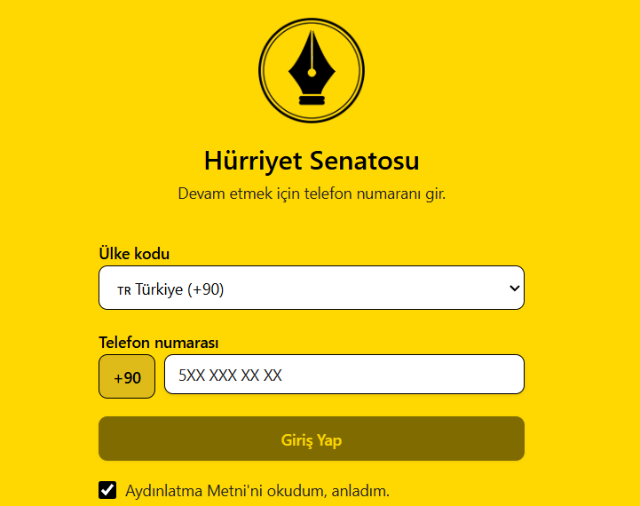

Fukaralığın Sonu: Negatif Gelir Vergisi
Sosyal yardımı insan onuruna yakışır hâle getiriyoruz: destek, doğrudan ihtiyaç sahibinin hesabına yatıyor.
Ekonomi
Bir senatörün referansıyla geldin. Başvuru linkin bu referansı taşıyor.
Parti değil · Dernek değil · Taban hareketi
Hoş geldin Hürriyetçi kardeşim. Hürriyet Senatosu; enflasyona, borca, bürokrasiye ve güvencesizliğe bir gecede uygulanabilir teknik çözümler öneren, minarşist bir taban hareketi. Vaktini, paranı ve umudunu tüketmeden gündemi belirle.
Seni her gün daha fakir yapan bu nizamı değiştirmemize yardım et.
Önce izle
Tanıtım filmi çok yakında burada olacak. Bu arada aşağıdan devam et.
Tanıtım videosu · Oynatmak için tıkla
Her gün aynı duvarlara çarpıyorsun:
Enflasyon, geçim derdi, israf, bürokrasi, güvencesizlik, borç sarmalı ve hukuk belirsizliği.
Mevcut siyasi kanallar seni temsil etmiyorsa, yeni bir kanal kur. İşte Senato bunun için var.
Başvurunu yap, adminler onaylasın. Hesabında sol üstte görünen Referans Numaranı al.

Sen + 15 kişi = 16 imzacı. İmzacıların Senato’ya bilfiil katılımı olmaz; ad ve soyadları admin dışında kimse tarafından görülmez, başka hassas bilgi istenmez.
Referans numaranı site adresiyle paylaş. Hedefe hızlıca ulaşalım: 2027 sonuna kadar 5.000 üye.
Aşağıdaki modeller, senatörlerin gündeme taşıyacağı teknik çözümler. Tamamı kararnameye dönüşebilecek altyapıya sahip; dünyada uygulanmış örneklerden yararlanıyoruz. Kütüphane ve İcraat Galerisi yakında açılıyor. O zamana kadar geçici bilgi kaynağı: Uğur Güzel’in hesapları. Beğendiğin modeli seç, çevrene anlat — gündemi birlikte belirleyelim.
Sosyal yardımı insan onuruna yakışır hâle getiriyoruz: destek, doğrudan ihtiyaç sahibinin hesabına yatıyor.
Ekonomi
Enflasyona “bir gecede” uygulanabilir bir model öneriyoruz.
Ekonomi
Tekelleri ve kartelleri tek imzayla ortadan kaldıran modelle serbest piyasa düzenini kurmayı hedefliyoruz.
Ekonomi
Borç yükünü hafifletiyor; kamu borç yönetimini, fon ekonomisine geçişi ve açık kambiyo rejimini gündeme taşıyoruz.
Ekonomi
Tıkanıklığı gidermek, yargıyı hızlandırmak ve bireyi güçlendirmek için Common Law ilkelerini entegre ediyoruz.
Hukuk
Mülkiye amirlerinin otomatik rotasyonuyla bürokraside kriz yönetimini iyileştiriyoruz.
Kamu
SGK sistemini tasfiye ediyor; sağlık ile emekliliği ayrıştırıyor, özel sektör etkinliğini artırıyoruz.
Sosyal
Trafik sorununa yasaklarla değil, teknik liberasyonla çözüm getiriyoruz.
Kamu
Gayrimenkul piyasasındaki tıkanıklıklar ve emeklilik sorunları için teknik çözümler üretiyoruz.
Diğer
Hürriyet Senatosu nedir?
Hürriyet Senatosu minarşist bir taban hareketi: devletin yalnızca temel güvenlik ve adaletle sınırlı olmasını savunuyoruz ve sorunlara teknik çözüm modelleri sunuyoruz. Parti, dernek, vakıf veya STK yapısına bulaşmadan tarih sahnesine çıkıyoruz. Fikrî zeminimiz ise 1765’te başlayan hürriyetçi gelenek.
Çerçevemiz
Hürriyetçi düşünce Türkiye’de bu üç başlıkta öne çıkıyor. Fikrî çerçevemiz bu üç hürriyetin güçlenmesine dayanıyor.
Önceliğimiz net: önce serbest piyasa, ardından fikir hürriyeti ile din ve vicdan hürriyeti. Bu üçünü birlikte büyüteceğiz.
Kökenler · 1765
Hürriyetçi düşüncenin Amerikan özgürlük geleneğindeki duraklarından biri 1765’te başlıyor: Boston’da bir araya gelen orta sınıf mensubu ve müteşebbisler, temsil edilmeden vergilendirilmeye karşı çıktı. O buluşma sonraki kuşakların hürriyet mücadelesine zemin oldu.
İngilizlerin, bugünkü Amerika Birleşik Devletleri’nin öncülü olan On Üç Koloni’de uygulamaya koyduğu vergi, kolonilerde ciddi bir tepkiye yol açtı.
Bu vergiye ve temsil edilmeden vergilendirilmeye karşı çıkan orta sınıf mensubu ve müteşebbisler hürriyet adına bir araya geldi. Boston’da bir ağacın altında buluştular.
Buluştukları ağaç zamanla Hürriyet Ağacı olarak anıldı; çevresinde bir özgürlük ateşi yandı. John Avery ve Henry Bass gibi isimler bu çevrenin içindeydi.
Bu öncü grubun içinden daha geniş hareketler doğdu; etkileri çok daha büyük gelişmelere uzandı.
Yanan ateş sonraki kuşağı da etkiledi: ilk hareketin mensuplarından etkilenen, onlarla sohbet eden isimler bu süreçte yer aldı. Samuel Adams ve John Adams sonradan kurucu figürler arasına girdi.
Bildirge’yi Anayasa ve anayasa değişiklikleri izledi; Jefferson ile John Adams gibi kurucu isimlerin fikirleriyle şekillenen gelenek doğdu. Etkisi Amerika’da kalmadı: bütün dünyadaki hürriyetçi düşünceye geçti.
Gettysburg konuşması da bu geleneğin temel değerlerini taşıyor; Jefferson’ın özgürlük çizgisi sonraki kuşaklara miras kaldı.
Bu mirası genç kuşaklarla buluşturuyoruz: Senato’nun fikrî zemini burada başlıyor.
Yöntem · Öncü grup
Sadık Dokuzlar dokuz kişilik bir öncü gruptu: fikir ürettiler, tartıştılar. İçlerinden Hürriyetin Çocukları gibi daha geniş hareketler doğdu ve etkileri büyük gelişmelere uzandı. Senato’yu da aynı mantıkla kurduk: küçük, disiplinli ve fikir üreten bir çekirdek. Sen de o çekirdeğin parçasısın.
Amacımız; fikir üreten, tartışan ve hürriyetçi düşünceye katkı sağlayan gençlerin önünü açmak. Bu çizgiden yetişen kuşağın ilerleyen yıllarda iş dünyasında ve siyasette etkili olmasıyla hürriyetçi fikriyatın Türkiye’de hâkim olmasını sağlayacağız.
Zincirin ilk halkası sensin: 16 imzacı seninle başlıyor.
Kavram netliği
Kavramlar konusunda ciddi bir karmaşa var ve bunu gidermeyi görev sayıyoruz: hürriyetçi düşüncenin doğru anlaşılması için ayrımlar şart.
Libertaryen düşünce liberal demokrasiyle ortak noktalar taşıyor; farkı, özgürlüğü çok daha geniş bir perspektiften ele alması. Bu ayrımı çevrene anlatarak karmaşayı birlikte giderelim.
Metinlerde geçen kavramlar, tek cümleyle:
Hayır. Parti, dernek, vakıf veya STK değiliz; seçime girmiyoruz, resmî kurum ya da yasal temsil iddiamız yok. Kapalı devre bir taban hareketiyiz.
Üç şey: başvur ve onayı bekle; kendin dahil 16 imzacı ekle; referans numaranla yeni senatör adayları getir. Süre: 2027 sonuna kadar.
Hayır, imzacıların Senato’ya bilfiil katılımı olmaz. Yalnızca imzacıdırlar. İkna ettiğin 15 kişi + sen = 16 imzacı.
İmzacıların ad ve soyadı sistemde admin dışında kimse tarafından görülmez; başka bir hassas bilgi istenmez. Aydınlatma metni: KVKK metni.
Devletin yalnızca temel güvenlik ve adaletle sınırlı olması gerektiğini savunuyoruz; teknik çözümleri bu zeminde üretiyoruz.
1765’te Boston’da bir araya gelen Sadık Dokuzlar (Loyal Nine) ile anılan ad; hürriyetçi geleneğin başlangıç noktası.
Hayır. Libertaryen düşünce anarşizm veya sol liberalizmle özdeşleştirilemez; hedonizmle ilişkilendirilen yaklaşımlardan da ayrı. Serbest piyasa da zenginlerin daha da zengin olması demek değil.
Çünkü tarihte öncü gruplar büyük hareketlerin zeminini hazırladı: Sadık Dokuzlar dokuz kişilikti ve içlerinden daha geniş hareketler doğdu. Senato’yu da 16 imzacıyla başlatıyoruz: sen + ikna ettiğin 15 kişi.
1765–1776 hürriyetçi çizgiye ve üç hürriyete dayanıyor: fikir hürriyeti, din ve vicdan hürriyeti, teşebbüs hürriyeti. Kavram karmaşasını gidermeyi de görev sayıyoruz; libertaryen düşünce hedonizm, sol liberalizm veya anarşizmle karıştırılmıyor.
2027 sonuna kadar 5.000 üyeye ulaşmayı hedefliyoruz. Hedefe ulaşırsak 2028 başında farklı bir Türkiye inşa edeceğiz — bu sözümüz.
Minarşistsen ve Türkiye'nin bu çürütücü sorunlarını çözmek istiyorsan hangi dünya görüşünden, hangi sosyolojiden gelirsen gel, sen de artık bir Hürriyet Senatörüsün.
Çizgimiz hürriyet çizgisidir, firavunlar değil, hak eden kazanacak!
Görünür olmak zorunda kalmadan, rahatını ve özgürlüğünü riske atmadan Türkiye’nin makus talihini yenmek mümkün. Hürriyet Senatosu’na hoş geldin.